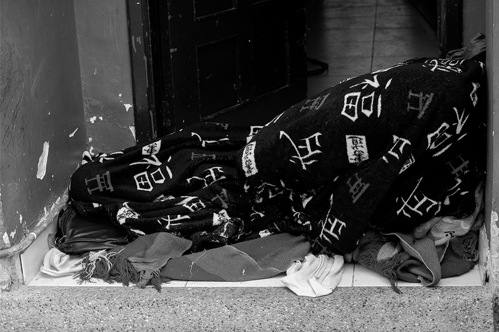
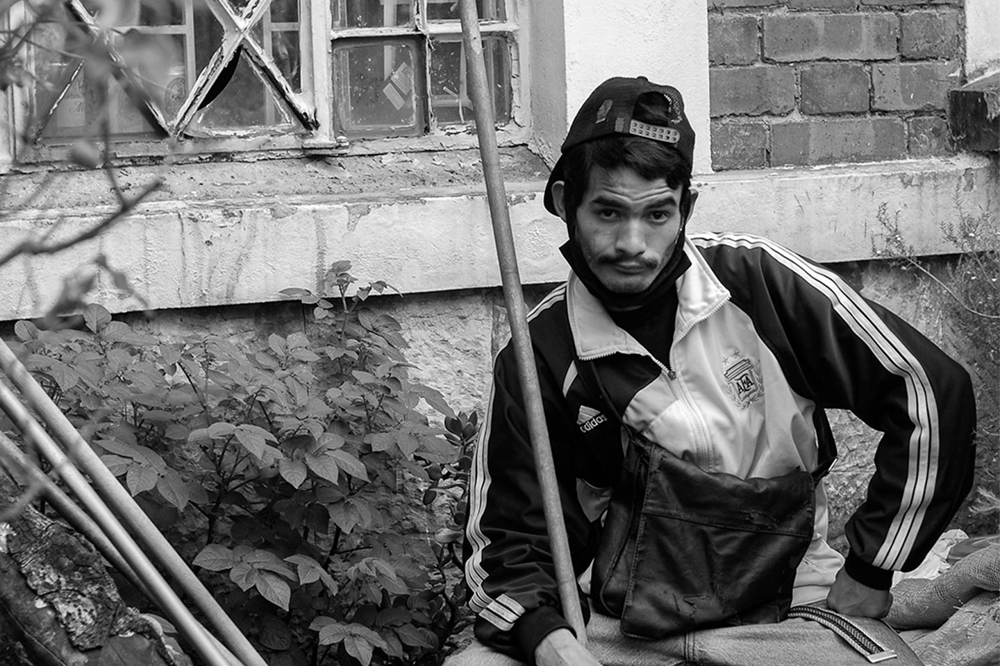
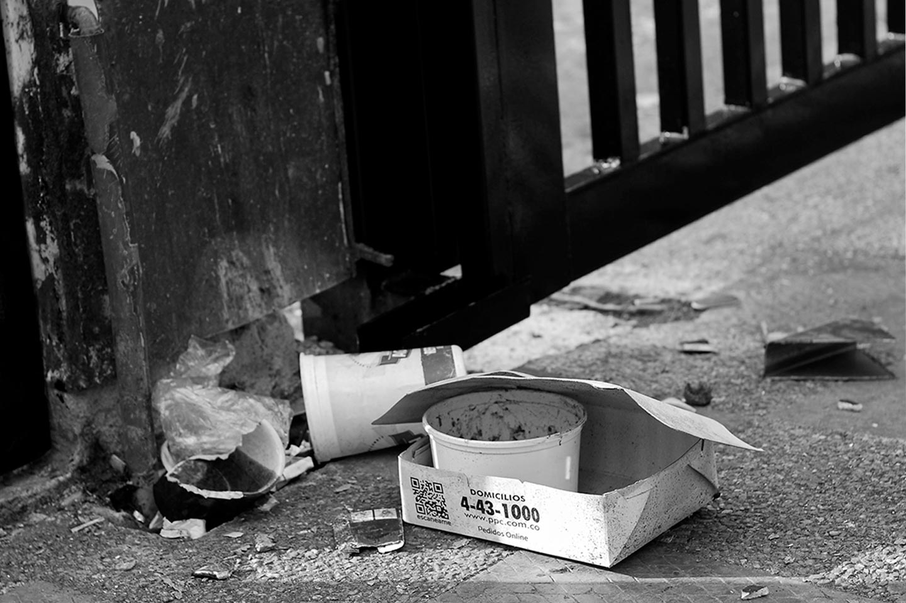
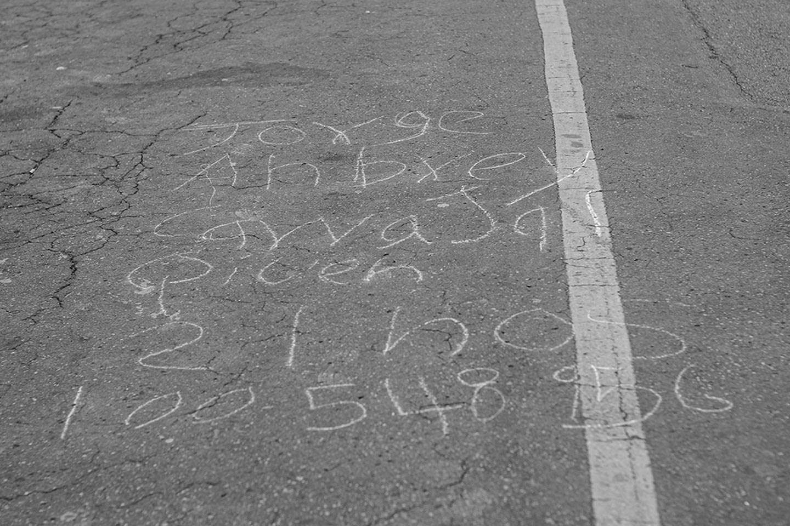
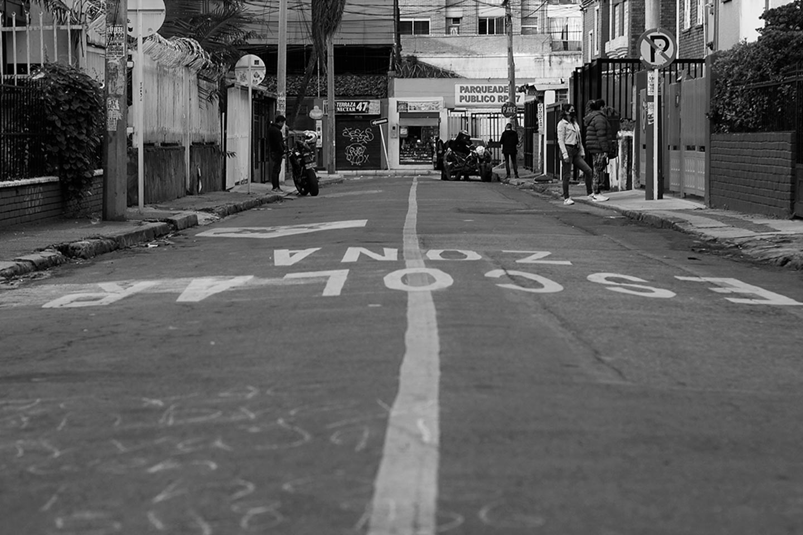

IF
Jorge Carvajal es un joven de 24 años habitante de calle en la ciudad de Bogotá, específicamente en la zona de Chapinero. Su vida ha sido casi una incógnita para muchos pues padece de una discapacidad física que le impide escuchar y por ende hablar, por lo que ha sido difícil pedirle que cuente concretamente su historia, él se trata de comunicar con señas que él mismo ha creado o muy rara vez escribe con piedras en el piso. Jorge se sabe su nombre, sus apellidos, su cédula, y dice que tiene 21 años, sin embargo, cuando se le pregunta el año en el que nació dice que 1996, ha contado un par de veces que estuvo en el ejército pues intenta imitar la acción de cargar el arma y disparar, realmente no se tiene conocimiento alguno de cómo llegó a ser habitante de calle, pero se puede llegar a pensar que fue por su condición. He visto a Jorge consumir marihuana y nunca recibe cigarrillo, pero cabe la posibilidad que quizá antes haya consumido otras drogas que probablemente también lo hayan llevado a este mundo de las calles.
Jorge conocido en la cuadra en la que habita como “el mudito”, ha sobrevivido en este espacio gracias a su gran forma de ser y a su disposición por colaborar en labores delegadas o labores que él hace por distracción, es un joven carismático y respetuoso,
y se ha ganado el cariño de los residentes de la cuadra, ellos le ayudan con un aspecto importante como lo es la alimentación que reparte para diferentes lapsos de tiempo o quizá días, algunas veces se ha visto bañado, por lo que se piensa que en algún lugar le prestan el servicio para que él se bañe. Jorge ha sido muy valiente por lo que se ve físicamente,

a decisión propia ha estado en rehabilitación, realizando actividades varias, como, por ejemplo, el cuidado de los carros que parquean cerca de su casa, lo han contratado para pintar casas vecinas, arreglar los jardines y tiene un espacio que le prestaron para que él sembrará sus propias plantas. Me mostró la ropa que tiene en una bolsa, regalada y recogida, viste bien y mantiene un aspecto físico realmente bueno, también se ve que tiene unos buenos tenis, los lava y los pone a secar, tiene muchas cobijas y almohadas que lo han ayudado en las noches para su comodidad, por último, me enseñó una crema de dientes refiriéndose a que es limpio y se preocupa por sí mismo.
Este ensayo ha sido un reto personal, desde muy pequeña hasta ahora le temo a estas personas, pero Jorge me demostró este punto tan importante del “no todos son iguales”, más allá de si es habitante de calle o no, es un ser humano con un corazón enorme, y aunque sonríe, es inevitable ver en su rostros gestos tristes, ver un rostro marcado a causa del hambre y la miseria que se vive al tener que descansar debajo de un marco de una puerta en el piso y quizá pasando frío. Este relato, es con un solo propósito, ponerse en los zapatos de los demás, y entender cómo es que estas personas que en gran mayoría no han tenido unas buenas oportunidades en la vida, sobreviven, y no estoy generalizando pues Jorge me ha demostrado que a pesar de las adversidades que la vida trae consigo, sin lujos, sin una familia, sin un plato lleno de comida diario, sin comodidades, etc, siempre habrá motivos para ser un buen ser humano, y solo espero que llegue el día en él y muchos más puedan salir de este mundo de la calle.
